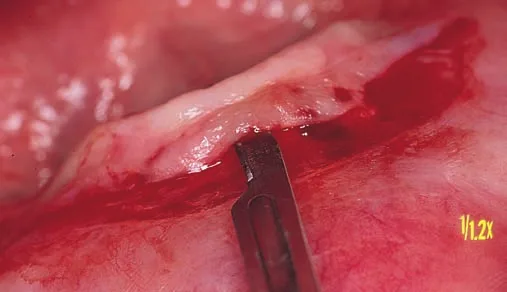
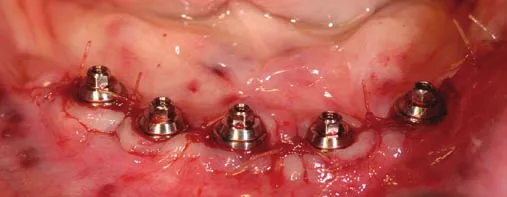

نسخه استخراجشده؛ ترجمه یا تأیید علمی انجام نشده است. وضعیت: captured
در مندیبل قدامی بیدندان با ارتفاع ۸ تا ۱۲ میلیمتر، محل برش و محل ایمپلنت — و محل برش جراحی مرحلهی دوم — برای موفقیت پروتزی حیاتیاند. برش باید طوری طراحی شود که لثهی کراتینیزه از دست نرود.
برش کرستال باید نوار لثهی کراتینیزه را نصف کند. دلیلش پیشگیرانه است: اگر خط برش در دورهی ترمیم باز شود، همچنان بخشی از لثهی کراتینیزه روی سطح لبیال اباتمنت باقی میماند.
و هشدار آناتومیک: هنگام بلند کردن فلپ، باید ۱۰ تا ۱۵ میلیمتر از اتصال عضلهی منتالیس به مندیبل حفظ شود تا از افتادگی چانه جلوگیری شود. جدا کردن بیمحابای این عضله، عارضهای است که بیمار هر روز در آینه میبیند.

موقعیت لبیولینگوال ایمپلنتها در کرست، برای راحتی بلندمدت بیمار تعیینکننده است. اگر ایمپلنت خیلی لینگوال برود، وارد بافت متحرک کف دهان میشود؛ اگر خیلی لبیال باشد، عضلات متحرک منتالیس مدام به اباتمنتها میسایند و مشکل مزمن میسازند. موقعیت ایدهآل، مرکز کرست است.
در مندیبل آتروفیک، نوار نازک لثهی کراتینیزه اغلب به سمت لینگوال جابهجا شده است. تلاش برای بزرگ کردن نوار لثهی چسبنده در این ناحیه چندان موفق نبوده، چون عضلات لب گرافت را جابهجا میکنند. راهکار عملی: هنگام اکسپوز، نوار باریک کراتینیزه را نصف و به سمت لبیال منتقل کن.
و دربارهی کرست ناهموار: برای کاهش کرست نازک یا تیز، رونژور بر فرزهای دوار ترجیح دارد — چون فرز میتواند به استخوان ترومای حرارتی بزند و به تحلیل اطراف ایمپلنت بینجامد.

نوع سؤال: ساخت کلمه · 4 خانه
حروف منبع: ز · م · ک · ر